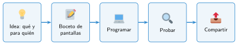
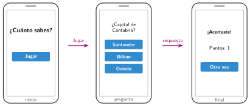

Diseñar una app
🤔 Pienso5 min
Qué hago aquí: Piensa un momento y contesta con lo que ya sabes. No pasa nada si no lo sabes: es para empezar.
Piensa en una app que uses mucho. Escribe su nombre y tres pantallas que tiene.
📖 Leo y aprendo15 min
Qué hago aquí: Lee despacio, mira los dibujos y los ejemplos, y quédate con la idea clave del final.
Una aplicación (o app) es un programa con pantallas y botones. Antes de programarla, se diseña en papel. El diseño tiene dos partes:

El diseño técnico empieza con un boceto: un dibujo sencillo de cada pantalla.

✏️ Hago25 min
Qué hago aquí: Haz las actividades en orden. Empieza siempre por las básicas.
Une cada pregunta con su tipo de diseño.
| ¿Para quién es la app? • | • Diseño técnico |
| ¿Qué pasa al pulsar Jugar? • | • Diseño funcional |
Elige tu app: de preguntas, de recetas, de tu equipo deportivo o de una excursión. Escribe qué hace y para quién es.
Dibuja el boceto de dos pantallas de tu app. Marca los botones.
Para cada botón de tu boceto, escribe qué pasa al pulsarlo.
✏️ Puedes responder escribiendo, con un dibujo o un esquema, o contándolo en voz alta.
🚀 Amplío (si quieres saber más)
Qué hago aquí: ¿Has terminado? Lee la curiosidad o elige el reto. Es voluntario.
Piensa en una persona que ve mal o que no puede usar las manos. ¿Qué cambiarías en tu app para que también le sirva?
✅ Compruebo5 min
Qué hago aquí: Contesta sin mirar la ficha y marca cómo lo llevas.